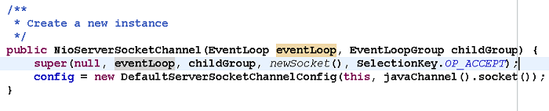
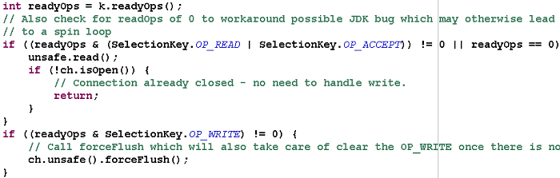

| 1.
背景
1.1. Java线程模型的演进
1.1.1. 单线程
时间回到十几年前，那时主流的CPU都还是单核（除了商用高性能的小机），CPU的核心频率是机器最重要的指标之一。
在Java领域当时比较流行的是单线程编程，对于CPU密集型的应用程序而言，频繁的通过多线程进行协作和抢占时间片反而会降低性能。
1.1.2. 多线程
随着硬件性能的提升，CPU的核数越来越越多，很多服务器标配已经达到32或64核。通过多线程并发编程，可以充分利用多核CPU的处理能力，提升系统的处理效率和并发性能。
从2005年开始，随着多核处理器的逐步普及，java的多线程并发编程也逐渐流行起来，当时商用主流的JDK版本是1.4，用户可以通过
new Thread（）的方式创建新的线程。
由于JDK1.4并没有提供类似线程池这样的线程管理容器，多线程之间的同步、协作、创建和销毁等工作都需要用户自己实现。由于创建和销毁线程是个相对比较重量级的操作，因此，这种原始的多线程编程效率和性能都不高。
1.1.3. 线程池
为了提升Java多线程编程的效率和性能，降低用户开发难度。JDK1.5推出了java.util.concurrent并发编程包。在并发编程类库中，提供了线程池、线程安全容器、原子类等新的类库，极大的提升了Java多线程编程的效率，降低了开发难度。
从JDK1.5开始，基于线程池的并发编程已经成为Java多核编程的主流。
1.2. Reactor模型
无论是C++还是Java编写的网络框架，大多数都是基于Reactor模式进行设计和开发，Reactor模式基于事件驱动，特别适合处理海量的I/O事件。
1.2.1. 单线程模型
Reactor单线程模型，指的是所有的IO操作都在同一个NIO线程上面完成，NIO线程的职责如下：
1）作为NIO服务端，接收客户端的TCP连接；
2）作为NIO客户端，向服务端发起TCP连接；
3）读取通信对端的请求或者应答消息；
4）向通信对端发送消息请求或者应答消息。
Reactor单线程模型示意图如下所示：
图1-1 Reactor单线程模型
由于Reactor模式使用的是异步非阻塞IO，所有的IO操作都不会导致阻塞，理论上一个线程可以独立处理所有IO相关的操作。从架构层面看，一个NIO线程确实可以完成其承担的职责。例如，通过Acceptor类接收客户端的TCP连接请求消息，链路建立成功之后，通过Dispatch将对应的ByteBuffer派发到指定的Handler上进行消息解码。用户线程可以通过消息编码通过NIO线程将消息发送给客户端。
对于一些小容量应用场景，可以使用单线程模型。但是对于高负载、大并发的应用场景却不合适，主要原因如下：
1）一个NIO线程同时处理成百上千的链路，性能上无法支撑，即便NIO线程的CPU负荷达到100%，也无法满足海量消息的编码、解码、读取和发送；
2）当NIO线程负载过重之后，处理速度将变慢，这会导致大量客户端连接超时，超时之后往往会进行重发，这更加重了NIO线程的负载，最终会导致大量消息积压和处理超时，成为系统的性能瓶颈；
3）可靠性问题：一旦NIO线程意外跑飞，或者进入死循环，会导致整个系统通信模块不可用，不能接收和处理外部消息，造成节点故障。
为了解决这些问题，演进出了Reactor多线程模型，下面我们一起学习下Reactor多线程模型。
1.2.2. 多线程模型
Rector多线程模型与单线程模型最大的区别就是有一组NIO线程处理IO操作，它的原理图如下：
图1-2 Reactor多线程模型
Reactor多线程模型的特点：
1）有专门一个NIO线程-Acceptor线程用于监听服务端，接收客户端的TCP连接请求；
2）网络IO操作-读、写等由一个NIO线程池负责，线程池可以采用标准的JDK线程池实现，它包含一个任务队列和N个可用的线程，由这些NIO线程负责消息的读取、解码、编码和发送；
3）1个NIO线程可以同时处理N条链路，但是1个链路只对应1个NIO线程，防止发生并发操作问题。
在绝大多数场景下，Reactor多线程模型都可以满足性能需求；但是，在极个别特殊场景中，一个NIO线程负责监听和处理所有的客户端连接可能会存在性能问题。例如并发百万客户端连接，或者服务端需要对客户端握手进行安全认证，但是认证本身非常损耗性能。在这类场景下，单独一个Acceptor线程可能会存在性能不足问题，为了解决性能问题，产生了第三种Reactor线程模型-主从Reactor多线程模型。
1.2.3. 主从多线程模型
主从Reactor线程模型的特点是：服务端用于接收客户端连接的不再是个1个单独的NIO线程，而是一个独立的NIO线程池。Acceptor接收到客户端TCP连接请求处理完成后（可能包含接入认证等），将新创建的SocketChannel注册到IO线程池（sub
reactor线程池）的某个IO线程上，由它负责SocketChannel的读写和编解码工作。Acceptor线程池仅仅只用于客户端的登陆、握手和安全认证，一旦链路建立成功，就将链路注册到后端subReactor线程池的IO线程上，由IO线程负责后续的IO操作。
它的线程模型如下图所示：
图1-3 主从Reactor多线程模型
利用主从NIO线程模型，可以解决1个服务端监听线程无法有效处理所有客户端连接的性能不足问题。
它的工作流程总结如下：
从主线程池中随机选择一个Reactor线程作为Acceptor线程，用于绑定监听端口，接收客户端连接；
Acceptor线程接收客户端连接请求之后创建新的SocketChannel，将其注册到主线程池的其它Reactor线程上，由其负责接入认证、IP黑白名单过滤、握手等操作；
步骤2完成之后，业务层的链路正式建立，将SocketChannel从主线程池的Reactor线程的多路复用器上摘除，重新注册到Sub线程池的线程上，用于处理I/O的读写操作。
2. Netty线程模型
2.1. Netty线程模型分类
事实上，Netty的线程模型与1.2章节中介绍的三种Reactor线程模型相似，下面章节我们通过Netty服务端和客户端的线程处理流程图来介绍Netty的线程模型。
2.1.1. 服务端线程模型
一种比较流行的做法是服务端监听线程和IO线程分离，类似于Reactor的多线程模型，它的工作原理图如下：
图2-1 Netty服务端线程工作流程
下面我们结合Netty的源码，对服务端创建线程工作流程进行介绍：
第一步，从用户线程发起创建服务端操作，代码如下：
图2-2 用户线程创建服务端代码示例
通常情况下，服务端的创建是在用户进程启动的时候进行，因此一般由Main函数或者启动类负责创建，服务端的创建由业务线程负责完成。在创建服务端的时候实例化了2个EventLoopGroup，1个EventLoopGroup实际就是一个EventLoop线程组，负责管理EventLoop的申请和释放。
EventLoopGroup管理的线程数可以通过构造函数设置，如果没有设置，默认取-Dio.netty.eventLoopThreads，如果该系统参数也没有指定，则为可用的CPU内核数
× 2。
bossGroup线程组实际就是Acceptor线程池，负责处理客户端的TCP连接请求，如果系统只有一个服务端端口需要监听，则建议bossGroup线程组线程数设置为1。
workerGroup是真正负责I/O读写操作的线程组，通过ServerBootstrap的group方法进行设置，用于后续的Channel绑定。
第二步，Acceptor线程绑定监听端口，启动NIO服务端，相关代码如下：
图2-3 从bossGroup中选择一个Acceptor线程监听服务端
其中，group()返回的就是bossGroup，它的next方法用于从线程组中获取可用线程，代码如下：
图2-4 选择Acceptor线程
服务端Channel创建完成之后，将其注册到多路复用器Selector上，用于接收客户端的TCP连接，核心代码如下：

图2-5 注册ServerSocketChannel
到Selector
第三步，如果监听到客户端连接，则创建客户端SocketChannel连接，重新注册到workerGroup的IO线程上。首先看Acceptor如何处理客户端的接入：
图2-6 处理读或者连接事件
调用unsafe的read（）方法，对于NioServerSocketChannel，它调用了NioMessageUnsafe的read()方法，代码如下：
图2-7 NioServerSocketChannel的read()方法
最终它会调用NioServerSocketChannel的doReadMessages方法，代码如下：
图2-8 创建客户端连接SocketChannel
其中childEventLoopGroup就是之前的workerGroup,
从中选择一个I/O线程负责网络消息的读写。
第四步，选择IO线程之后，将SocketChannel注册到多路复用器上，监听READ操作。
图2-9 监听网络读事件
第五步，处理网络的I/O读写事件，核心代码如下：

图2-10 处理读写事件
2.1.2. 客户端线程模型
相比于服务端，客户端的线程模型简单一些，它的工作原理如下：
图2-11 Netty客户端线程模型
第一步，由用户线程发起客户端连接，示例代码如下：
图2-12 Netty客户端创建代码示例
大家发现相比于服务端，客户端只需要创建一个EventLoopGroup，因为它不需要独立的线程去监听客户端连接，也没必要通过一个单独的客户端线程去连接服务端。Netty是异步事件驱动的NIO框架，它的连接和所有IO操作都是异步的，因此不需要创建单独的连接线程。相关代码如下：
图2-13 绑定客户端连接线程
当前的group（）就是之前传入的EventLoopGroup，从中获取可用的IO线程EventLoop，然后作为参数设置到新创建的NioSocketChannel中。
第二步，发起连接操作，判断连接结果，代码如下：
图2-14 连接操作
判断连接结果，如果没有连接成功，则监听连接网络操作位SelectionKey.OP_CONNECT。如果连接成功，则调用pipeline().fireChannelActive()将监听位修改为READ。
第三步，由NioEventLoop的多路复用器轮询连接操作结果，代码如下：
图2-15 Selector发起轮询操作
判断连接结果，如果或连接成功，重新设置监听位为READ：
图2-16 判断连接操作结果
图2-17 设置操作位为READ
第四步，由NioEventLoop线程负责I/O读写，同服务端。
总结：客户端创建，线程模型如下：
由用户线程负责初始化客户端资源，发起连接操作；
如果连接成功，将SocketChannel注册到IO线程组的NioEventLoop线程中，监听读操作位；
如果没有立即连接成功，将SocketChannel注册到IO线程组的NioEventLoop线程中，监听连接操作位；
连接成功之后，修改监听位为READ，但是不需要切换线程。
2.2. Reactor线程NioEventLoop
2.2.1. NioEventLoop介绍
NioEventLoop是Netty的Reactor线程，它的职责如下：
作为服务端Acceptor线程，负责处理客户端的请求接入；
作为客户端Connecor线程，负责注册监听连接操作位，用于判断异步连接结果；
作为IO线程，监听网络读操作位，负责从SocketChannel中读取报文；
作为IO线程，负责向SocketChannel写入报文发送给对方，如果发生写半包，会自动注册监听写事件，用于后续继续发送半包数据，直到数据全部发送完成；
作为定时任务线程，可以执行定时任务，例如链路空闲检测和发送心跳消息等；
作为线程执行器可以执行普通的任务线程（Runnable）。
在服务端和客户端线程模型章节我们已经详细介绍了NioEventLoop如何处理网络IO事件，下面我们简单看下它是如何处理定时任务和执行普通的Runnable的。
首先NioEventLoop继承SingleThreadEventExecutor，这就意味着它实际上是一个线程个数为1的线程池，类继承关系如下所示：
图2-18 NioEventLoop继承关系
图2-19 线程池和任务队列定义
对于用户而言，直接调用NioEventLoop的execute(Runnable
task)方法即可执行自定义的Task，代码实现如下：

图2-20 执行用户自定义Task
图2-21 NioEventLoop实现ScheduledExecutorService
通过调用SingleThreadEventExecutor的schedule系列方法，可以在NioEventLoop中执行Netty或者用户自定义的定时任务，接口定义如下：
图2-22 NioEventLoop的定时任务执行接口定义
2.3. NioEventLoop设计原理
2.3.1. 串行化设计避免线程竞争
我们知道当系统在运行过程中，如果频繁的进行线程上下文切换，会带来额外的性能损耗。多线程并发执行某个业务流程，业务开发者还需要时刻对线程安全保持警惕，哪些数据可能会被并发修改，如何保护？这不仅降低了开发效率，也会带来额外的性能损耗。
串行执行Handler链
为了解决上述问题，Netty采用了串行化设计理念，从消息的读取、编码以及后续Handler的执行，始终都由IO线程NioEventLoop负责，这就意外着整个流程不会进行线程上下文的切换，数据也不会面临被并发修改的风险，对于用户而言，甚至不需要了解Netty的线程细节，这确实是个非常好的设计理念，它的工作原理图如下：
图2-23 NioEventLoop串行执行ChannelHandler
一个NioEventLoop聚合了一个多路复用器Selector，因此可以处理成百上千的客户端连接，Netty的处理策略是每当有一个新的客户端接入，则从NioEventLoop线程组中顺序获取一个可用的NioEventLoop，当到达数组上限之后，重新返回到0，通过这种方式，可以基本保证各个NioEventLoop的负载均衡。一个客户端连接只注册到一个NioEventLoop上，这样就避免了多个IO线程去并发操作它。
Netty通过串行化设计理念降低了用户的开发难度，提升了处理性能。利用线程组实现了多个串行化线程水平并行执行，线程之间并没有交集，这样既可以充分利用多核提升并行处理能力，同时避免了线程上下文的切换和并发保护带来的额外性能损耗。
2.3.2. 定时任务与时间轮算法
在Netty中，有很多功能依赖定时任务，比较典型的有两种：
客户端连接超时控制；
链路空闲检测。
一种比较常用的设计理念是在NioEventLoop中聚合JDK的定时任务线程池ScheduledExecutorService，通过它来执行定时任务。这样做单纯从性能角度看不是最优，原因有如下三点：
在IO线程中聚合了一个独立的定时任务线程池，这样在处理过程中会存在线程上下文切换问题，这就打破了Netty的串行化设计理念；
存在多线程并发操作问题，因为定时任务Task和IO线程NioEventLoop可能同时访问并修改同一份数据；
JDK的ScheduledExecutorService从性能角度看，存在性能优化空间。
最早面临上述问题的是操作系统和协议栈，例如TCP协议栈，其可靠传输依赖超时重传机制，因此每个通过TCP传输的
packet 都需要一个 timer来调度 timeout 事件。这类超时可能是海量的，如果为每个超时都创建一个定时器，从性能和资源消耗角度看都是不合理的。
根据George Varghese和Tony Lauck 1996年的论文《Hashed
and Hierarchical Timing Wheels: data structures to efficiently
implement a timer facility》提出了一种定时轮的方式来管理和维护大量的timer调度。Netty的定时任务调度就是基于时间轮算法调度，下面我们一起来看下Netty的实现。
定时轮是一种数据结构，其主体是一个循环列表，每个列表中包含一个称之为slot的结构，它的原理图如下：
图2-24 时间轮工作原理
定时轮的工作原理可以类比于时钟，如上图箭头（指针）按某一个方向按固定频率轮动，每一次跳动称为一个tick。这样可以看出定时轮由个3个重要的属性参数：ticksPerWheel（一轮的tick数），tickDuration（一个tick的持续时间）以及
timeUnit（时间单位），例如当ticksPerWheel=60，tickDuration=1，timeUnit=秒，这就和时钟的秒针走动完全类似了。
下面我们具体分析下Netty的实现：时间轮的执行由NioEventLoop来复杂检测，首先看任务队列中是否有超时的定时任务和普通任务，如果有则按照比例循环执行这些任务，代码如下：
图2-25 执行任务队列
如果没有需要理解执行的任务，则调用Selector的select方法进行等待，等待的时间为定时任务队列中第一个超时的定时任务时延，代码如下：
图2-26 计算时延
从定时任务Task队列中弹出delay最小的Task，计算超时时间，代码如下：
图2-27 从定时任务队列中获取超时时间
定时任务的执行：经过周期tick之后，扫描定时任务列表，将超时的定时任务移除到普通任务队列中，等待执行，相关代码如下：
图2-28 检测超时的定时任务
检测和拷贝任务完成之后，就执行超时的定时任务，代码如下：
图2-29 执行定时任务
为了保证定时任务的执行不会因为过度挤占IO事件的处理，Netty提供了IO执行比例供用户设置，用户可以设置分配给IO的执行比例，防止因为海量定时任务的执行导致IO处理超时或者积压。
因为获取系统的纳秒时间是件耗时的操作，所以Netty每执行64个定时任务检测一次是否达到执行的上限时间，达到则退出。如果没有执行完，放到下次Selector轮询时再处理，给IO事件的处理提供机会，代码如下：
图2-30 执行时间上限检测
2.3.3. 聚焦而不是膨胀
Netty是个异步高性能的NIO框架，它并不是个业务运行容器，因此它不需要也不应该提供业务容器和业务线程。合理的设计模式是Netty只负责提供和管理NIO线程，其它的业务层线程模型由用户自己集成，Netty不应该提供此类功能，只要将分层划分清楚，就会更有利于用户集成和扩展。
令人遗憾的是在Netty 3系列版本中，Netty提供了类似Mina异步Filter的ExecutionHandler，它聚合了JDK的线程池java.util.concurrent.Executor，用户异步执行后续的Handler。
ExecutionHandler是为了解决部分用户Handler可能存在执行时间不确定而导致IO线程被意外阻塞或者挂住，从需求合理性角度分析这类需求本身是合理的，但是Netty提供该功能却并不合适。原因总结如下：
1. 它打破了Netty坚持的串行化设计理念，在消息的接收和处理过程中发生了线程切换并引入新的线程池，打破了自身架构坚守的设计原则，实际是一种架构妥协；
2. 潜在的线程并发安全问题，如果异步Handler也操作它前面的用户Handler，而用户Handler又没有进行线程安全保护，这就会导致隐蔽和致命的线程安全问题；
3. 用户开发的复杂性，引入ExecutionHandler，打破了原来的ChannelPipeline串行执行模式，用户需要理解Netty底层的实现细节，关心线程安全等问题，这会导致得不偿失。
鉴于上述原因，Netty的后续版本彻底删除了ExecutionHandler，而且也没有提供类似的相关功能类，把精力聚焦在Netty的IO线程NioEventLoop上，这无疑是一种巨大的进步，Netty重新开始聚焦在IO线程本身，而不是提供用户相关的业务线程模型。
2.4. Netty线程开发最佳实践
2.4.1. 时间可控的简单业务直接在IO线程上处理
如果业务非常简单，执行时间非常短，不需要与外部网元交互、访问数据库和磁盘，不需要等待其它资源，则建议直接在业务ChannelHandler中执行，不需要再启业务的线程或者线程池。避免线程上下文切换，也不存在线程并发问题。
2.4.2. 复杂和时间不可控业务建议投递到后端业务线程池统一处理
对于此类业务，不建议直接在业务ChannelHandler中启动线程或者线程池处理，建议将不同的业务统一封装成Task，统一投递到后端的业务线程池中进行处理。
过多的业务ChannelHandler会带来开发效率和可维护性问题，不要把Netty当作业务容器，对于大多数复杂的业务产品，仍然需要集成或者开发自己的业务容器，做好和Netty的架构分层。
2.4.3. 业务线程避免直接操作ChannelHandler
对于ChannelHandler，IO线程和业务线程都可能会操作，因为业务通常是多线程模型，这样就会存在多线程操作ChannelHandler。为了尽量避免多线程并发问题，建议按照Netty自身的做法，通过将操作封装成独立的Task由NioEventLoop统一执行，而不是业务线程直接操作，相关代码如下所示：
图2-31 封装成Task防止多线程并发操作
如果你确认并发访问的数据或者并发操作是安全的，则无需多此一举，这个需要根据具体的业务场景进行判断，灵活处理。
3. 总结
尽管Netty的线程模型并不复杂，但是如何合理利用Netty开发出高性能、高并发的业务产品，仍然是个有挑战的工作。只有充分理解了Netty的线程模型和设计原理，才能开发出高质量的产品。 |